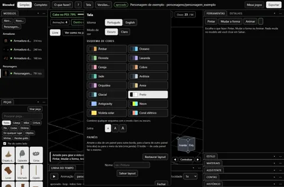
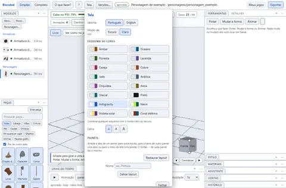
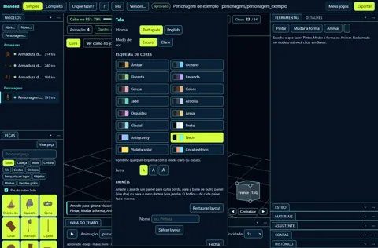
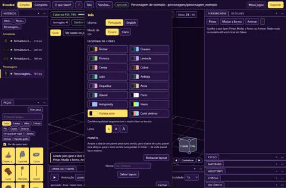
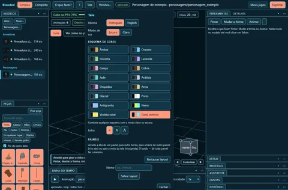

Cinco esquemas · Preto, Antigravity e contrastes

Antigravity claro 
Neon 
Violeta solar 
Coral elétrico
20/10/2026 · Capturas anteriores ao refinamento multicolor e à correção do Preto. Os 16 esquemas atuais têm seis testes JS, quatro cenários Playwright e 32 combinações conferidas. Esquemas aprovados visualmente pelo usuário após o refinamento; revisão técnica e integração pendentes.
Original: E:/MrMak/Blended-playtests/2026-10-20-temas-contraste/preto-escuro.png, E:/MrMak/Blended-playtests/2026-10-20-temas-contraste/antigravity-claro.png, E:/MrMak/Blended-playtests/2026-10-20-temas-contraste/neon-escuro.png, E:/MrMak/Blended-playtests/2026-10-20-temas-contraste/violeta-solar-escuro.png, E:/MrMak/Blended-playtests/2026-10-20-temas-contraste/coral-eletrico-escuro.png